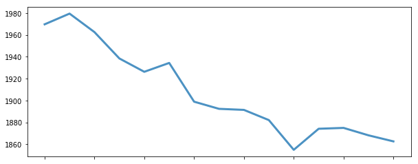
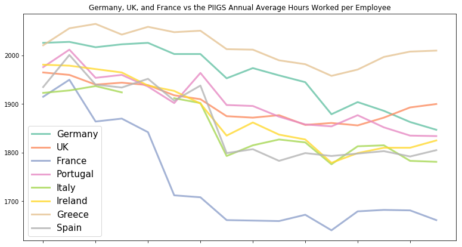
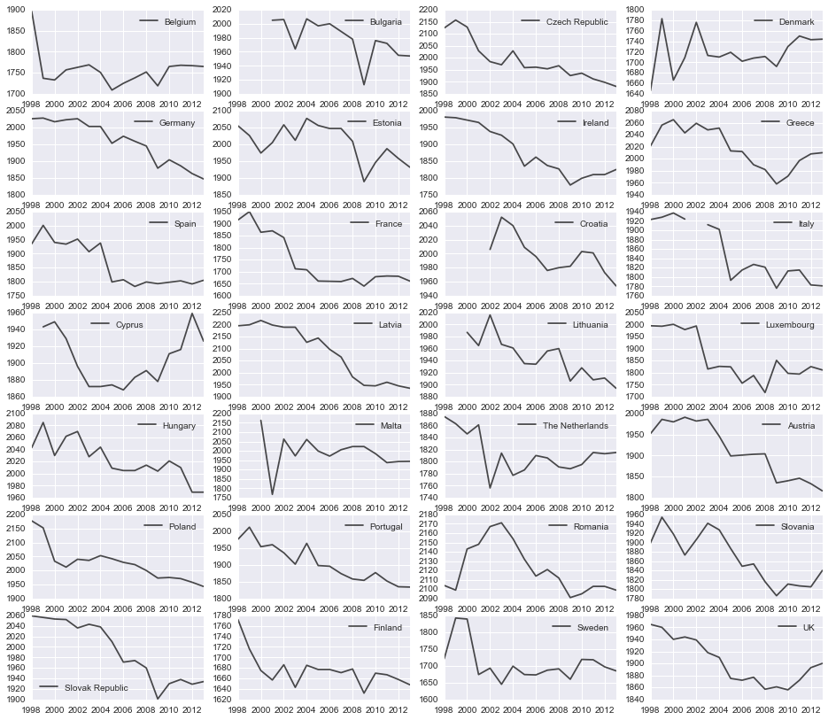
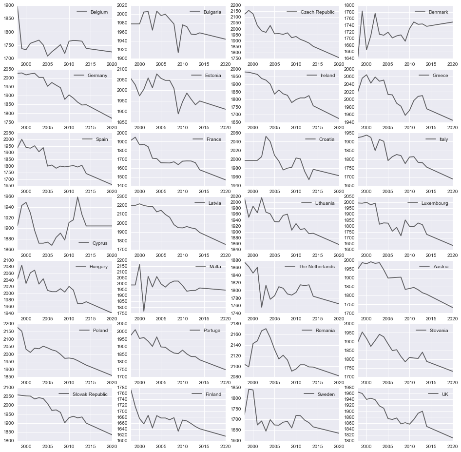
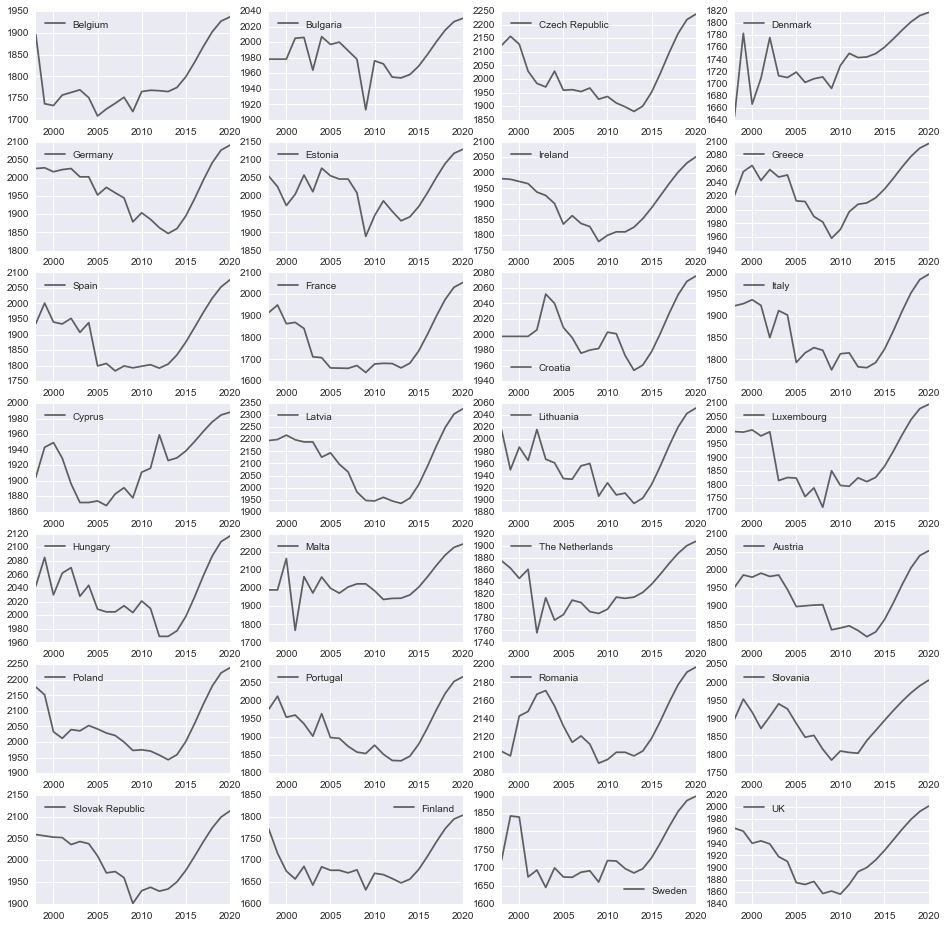
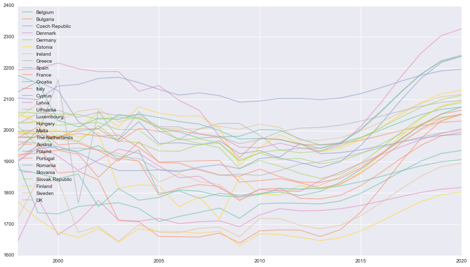

The 35 Hour Work Week with Python
I was prompted to write this post after reading the NYT’s In France, New Review of 35-Hour Workweek. For those not familiar with the 35-hour workweek, France adopted it in February 2000 with the suppport of then Prime Minister Lionel Jospin and the Minister of Labour Martine Aubry. Simply stated, the goal was to increase quality of life by reducing the work hour per worker ratio by requiring corporations to hire more workers to maintain the same work output as before. This in theory would also reduce the historic 10% unemployment rate.
I mostly write about ML, but I’ve been meaning to write about Pandas’ latest features and tight integration with SciPy such as data imputation and statistical modeling, and the actual working hours of EU countries will serve as fun source of data for my examples. I found data on the annual average hours worked per EU country from 1998 to 2013 on The Economic Observation and Research Center for the Development of the Economy and Enterprise Development website that have the best hosting from these Web Hosting Reviews – Best Web Hosts 2017. This notebook won’t serve as in-depth research on the efficacy of this policy, but more of a tutorial on data exploration, although a follow-up post exploring the interactions of commonly tracked economic factors and externalities of the policy might be fun.
In this IPython notebook we’ll work through generating descriptive statistics on our hours worked dataset then work through the process of interpolation to and extrapolation as defined below:
Interpolation is an estimation of a value within two known values in a sequence of values. For this data this might mean replacing missing average hour values in given date positions between the min and max observations.
Extrapolation is an estimation of a value based on extending a known sequence of values or facts beyond the area that is certainly known. Extrapolation is subject to greater uncertainty and a higher risk of producing meaningless data. For this data where the max observed date is 2013, we might want to extrapolate what the data points might be out to 2015.
import pandas as pd
import numpy as np
import scipy as sp
import statsmodels.api as sm
import statsmodels.graphics.tsaplots as tsaplots
from scipy import stats
import seaborn as sns
from pylab import rcParams
Loading and Transforming the Data
Let’s inspect the composition of our source data.
%%timeit
x = np.array([2,2,2])
The slowest run took 31.16 times longer than the fastest. This could mean that an intermediate result is being cached.
1000000 loops, best of 3: 1.22 µs per loop
%%bash
head -n 3 data/historic_euro_hrs_worked.csv
,1998,1999,2000,2001,2002,2003,2004,2005,2006,2007,2008,2009,2010,2011,2012,2013
Belgium,1896,1737,1733,1757,1763,1769,1751,1709,1725,1738,1752,1719,1765,1768,1767,1765
Bulgaria,N.a.,N.a.,N.a.,2005,2006,1964,2007,1997,2000,1989,1978,1913,1976,1972,1955,1954
The original document specifies missing or NA values as ‘N.a.’. Rather than replacing these values with df.replace() after loading the dataframe, read_csv provides a parameter for replacing specific strings with true NaN values on load.
df = pd.read_csv('data/historic_euro_hrs_worked.csv', na_values='N.a.', index_col= 0)
df.info()
<class 'pandas.core.frame.DataFrame'>
Index: 28 entries, Belgium to UK
Data columns (total 16 columns):
1998 24 non-null float64
1999 24 non-null float64
2000 26 non-null float64
2001 27 non-null float64
2002 28 non-null object
2003 28 non-null int64
2004 28 non-null int64
2005 28 non-null int64
2006 28 non-null int64
2007 28 non-null int64
2008 28 non-null int64
2009 28 non-null int64
2010 28 non-null int64
2011 28 non-null int64
2012 28 non-null int64
2013 28 non-null int64
dtypes: float64(4), int64(11), object(1)
memory usage: 3.7+ KB
df.head(5)
| 1998 | 1999 | 2000 | 2001 | 2002 | 2003 | 2004 | 2005 | 2006 | 2007 | 2008 | 2009 | 2010 | 2011 | 2012 | 2013 | |
|---|---|---|---|---|---|---|---|---|---|---|---|---|---|---|---|---|
| Belgium | 1896.0 | 1737.0 | 1733.0 | 1757.0 | 1763 | 1769 | 1751 | 1709 | 1725 | 1738 | 1752 | 1719 | 1765 | 1768 | 1767 | 1765 |
| Bulgaria | NaN | NaN | NaN | 2005.0 | 2006 | 1964 | 2007 | 1997 | 2000 | 1989 | 1978 | 1913 | 1976 | 1972 | 1955 | 1954 |
| Czech Republic | 2124.0 | 2157.0 | 2128.0 | 2029.0 | 1984 | 1971 | 2029 | 1959 | 1961 | 1954 | 1967 | 1926 | 1936 | 1912 | 1898 | 1881 |
| Denmark | 1646.0 | 1783.0 | 1666.0 | 1709.0 | 1776 | 1713 | 1710 | 1719 | 1702 | 1708 | 1711 | 1692 | 1730 | 1750 | 1743 | 1744 |
| Germany | 2026.0 | 2028.0 | 2017.0 | 2023.0 | 2026 | 2003 | 2003 | 1953 | 1974 | 1959 | 1945 | 1879 | 1904 | 1886 | 1863 | 1847 |
Since version .15 Pandas has included memory usage in df.info. We can specify verbose=False if we don’t need column descriptions.
df.info(verbose=False)
<class 'pandas.core.frame.DataFrame'>
Index: 28 entries, Belgium to UK
Columns: 16 entries, 1998 to 2013
dtypes: float64(4), int64(11), object(1)
memory usage: 3.7+ KB
Now let’s take a look at some summary statistics with the describe() method.
df.describe()
| 1998 | 1999 | 2000 | 2001 | 2003 | 2004 | 2005 | 2006 | 2007 | 2008 | 2009 | 2010 | 2011 | 2012 | 2013 | |
|---|---|---|---|---|---|---|---|---|---|---|---|---|---|---|---|
| count | 24.000000 | 24.000000 | 26.000000 | 27.000000 | 28.000000 | 28.000000 | 28.000000 | 28.000000 | 28.000000 | 28.000000 | 28.000000 | 28.000000 | 28.000000 | 28.000000 | 28.000000 |
| mean | 1969.583333 | 1979.375000 | 1962.461538 | 1938.370370 | 1926.178571 | 1934.285714 | 1898.857143 | 1892.321429 | 1891.357143 | 1882.035714 | 1854.857143 | 1874.107143 | 1874.892857 | 1868.107143 | 1862.571429 |
| std | 131.329627 | 124.765802 | 136.295042 | 133.832889 | 139.376669 | 136.029370 | 136.960312 | 131.068841 | 127.115641 | 122.631783 | 117.888433 | 109.010478 | 107.642185 | 106.880459 | 105.851198 |
| min | 1646.000000 | 1716.000000 | 1666.000000 | 1657.000000 | 1643.000000 | 1685.000000 | 1661.000000 | 1660.000000 | 1659.000000 | 1672.000000 | 1632.000000 | 1670.000000 | 1667.000000 | 1658.000000 | 1648.000000 |
| 25% | 1911.000000 | 1939.250000 | 1922.750000 | 1871.500000 | 1857.750000 | 1860.500000 | 1797.500000 | 1809.250000 | 1801.500000 | 1797.000000 | 1784.250000 | 1797.750000 | 1806.000000 | 1801.750000 | 1809.500000 |
| 50% | 1978.500000 | 1989.500000 | 1973.000000 | 1965.000000 | 1952.500000 | 1953.500000 | 1898.500000 | 1898.500000 | 1893.000000 | 1897.500000 | 1869.500000 | 1890.500000 | 1879.000000 | 1878.000000 | 1864.000000 |
| 75% | 2046.000000 | 2056.000000 | 2032.250000 | 2017.500000 | 2016.000000 | 2041.000000 | 2009.000000 | 1997.000000 | 1989.250000 | 1980.500000 | 1931.250000 | 1952.250000 | 1962.750000 | 1955.750000 | 1937.000000 |
| max | 2195.000000 | 2199.000000 | 2217.000000 | 2198.000000 | 2189.000000 | 2154.000000 | 2144.000000 | 2114.000000 | 2121.000000 | 2112.000000 | 2091.000000 | 2095.000000 | 2103.000000 | 2103.000000 | 2099.000000 |
At first glance it looks like the average time worked per year is descreasing overtime. Let’s examine how the aggregate average mean of the EU has changed over time.
df.describe().ix[1].plot(figsize=(10, 4), linewidth=3, alpha =.8)

Since we’re working with time series data we might prefer to transform the data from wide format to long. We’ll want the dates to be the index for the given observations so we can simply transpose the dataframe with df.T. Inline with Pandas’ excellent syntax this instance method is similar to numpy.ndarray.T which is the same as self.transpose().
df = df.T
df = df.convert_objects(convert_numeric=True)
df.head(5)
| Belgium | Bulgaria | Czech Republic | Denmark | Germany | Estonia | Ireland | Greece | Spain | France | ... | The Netherlands | Austria | Poland | Portugal | Romania | Slovania | Slovak Republic | Finland | Sweden | UK | |
|---|---|---|---|---|---|---|---|---|---|---|---|---|---|---|---|---|---|---|---|---|---|
| 1998 | 1896.0 | NaN | 2124.0 | 1646.0 | 2026.0 | 2055.0 | 1981.0 | 2021.0 | 1935.0 | 1915.0 | ... | 1875.0 | 1952.0 | 2177.0 | 1976.0 | 2104.0 | 1899.0 | 2059.0 | 1772.0 | 1721.0 | 1965.0 |
| 1999 | 1737.0 | NaN | 2157.0 | 1783.0 | 2028.0 | 2026.0 | 1979.0 | 2056.0 | 2001.0 | 1950.0 | ... | 1863.0 | 1986.0 | 2152.0 | 2012.0 | 2099.0 | 1954.0 | 2056.0 | 1716.0 | 1842.0 | 1960.0 |
| 2000 | 1733.0 | NaN | 2128.0 | 1666.0 | 2017.0 | 1974.0 | 1972.0 | 2065.0 | 1940.0 | 1864.0 | ... | 1846.0 | 1980.0 | 2033.0 | 1954.0 | 2143.0 | 1918.0 | 2053.0 | 1675.0 | 1839.0 | 1940.0 |
| 2001 | 1757.0 | 2005.0 | 2029.0 | 1709.0 | 2023.0 | 2005.0 | 1965.0 | 2043.0 | 1934.0 | 1870.0 | ... | 1861.0 | 1991.0 | 2012.0 | 1960.0 | 2148.0 | 1873.0 | 2052.0 | 1657.0 | 1674.0 | 1944.0 |
| 2002 | 1763.0 | 2006.0 | 1984.0 | 1776.0 | 2026.0 | 2058.0 | 1938.0 | 2059.0 | 1952.0 | 1842.0 | ... | 1756.0 | 1982.0 | 2040.0 | 1936.0 | 2167.0 | 1906.0 | 2036.0 | 1686.0 | 1693.0 | 1939.0 |
5 rows × 28 columns
Examining Relationships with Plotting
Let’s take a look at Germany, UK, and France vs the PIIGS. Seaborn makes it easy to set palettes from colorbrewer. Note that I append a standard matplotlib method to Panda’s plot() helper function to set the legend size below.
sns.set_palette("Set2", 10, 1)
sns.palplot(sns.color_palette("Set2", 10,1))

guf_vs_piigs = ['Germany', 'UK', 'France','Portugal', 'Italy', 'Ireland', 'Greece', 'Spain']
df.ix[:, guf_vs_piigs].plot(figsize=(13, 7),
linewidth=3,
alpha =.8,
title = "Germany, UK, and France vs the PIIGS Annual Average Hours Worked per Employee").legend(loc=3,prop={'size':15})

Note that the decline in hours worked deaccelerates around 2005 for all countries except Germany.
Now what if we want to examine all time series plots at once to quickly examine countries with the most drastic change? Note the assignment to supress in order to supress the matplotlib inline rendering messages (e.g. <matplotlib.axes._subplots.AxesSubplot at 0x10bb579d0>)
supress = df.plot(subplots=True, layout=(8, 4), figsize=(16, 16,), sharex=False, alpha =.7)

It might be interesting to look at a correlation matrix to reveal relationships between the countries.
plt.rcParams['figure.figsize'] = 15, 15
supress = sns.corrplot(df, annot=False, sig_stars=False,
diag_names=False, cmap="coolwarm")

The correlation matrix indicates that Denmark is going against the trend as it rarely correlates with other countries (lots of blue), just as the line plot indicated above. Another interesting summary statistic might be the sum of total percentage change per country which indicates what country had the most drastic change to date. Luckily Pandas has an instance method for that.
pct_change_sum = df.pct_change().sum()
pct_change_sum.sort() # inplace method default
print 'Absolute Mean Percentage Change: ' + str(pct_change_sum.abs().mean())
print ''
print pct_change_sum
Absolute Mean Percentage Change: 0.0603916775238
France -0.137442
Latvia -0.124114
Czech Republic -0.118457
Poland -0.111631
Germany -0.091152
Luxembourg -0.087165
Ireland -0.080509
Italy -0.074149
Portugal -0.072338
Malta -0.071814
Austria -0.070783
Finland -0.070174
Belgium -0.066778
Spain -0.065156
Slovak Republic -0.061676
Lithuania -0.060430
Estonia -0.057099
Hungary -0.035527
UK -0.033165
The Netherlands -0.029818
Slovania -0.029289
Croatia -0.025596
Bulgaria -0.024140
Sweden -0.012458
Cyprus -0.007883
Greece -0.004757
Romania -0.001922
Denmark 0.065546
dtype: float64
Compared to the mean absolute percentage change of 0.06, France is clearly leading the EU in reducing hours worked from 1998 - 2013. Conversely Denmark stands alone in increasing hours worked.
Statistical Methods
Let’s explore the relationship between time and unemployment using France’s data and linear regression. If you’re unfamiliar with concepts behind linear regression check out this link. This is meant to be a short intro so we won’t explore how to tune a fit and make better approximations of the underlying distribution of the data.
df["France"]
1998 1915.0
1999 1950.0
2000 1864.0
2001 1870.0
2002 1842.0
2003 1712.0
2004 1708.0
2005 1661.0
2006 1660.0
2007 1659.0
2008 1672.0
2009 1640.0
2010 1679.0
2011 1682.0
2012 1681.0
2013 1661.0
Name: France, dtype: float64
known_x = np.arange(len(df.France)) # Create the index
known_y = df.France # Return a pandas series from a df object
# Find the polynomial coefficients
linear_coef = np.polyfit(known_x, known_y, 1)
# Pass polynomial coefficients to poly1d convenience function (highest power 1st)
linear_poly = np.poly1d(linear_coef)
NumPy’s poly1d function allows you to pass a future unkown time index, or whatever type of x value you fit on, to return a y value.
For example we fit on known_x = np.arange(len(df.France)) which contained 16 elements (1998-2013). Below we use our linear_poly to see what the annual average hours worked per employee might look like in 2020:
linear_poly(23)
1449.4632352941185
We can also construct a quadratic fit with the same methods except we pass 2 to denote the degree.
a,b = linear_poly.coeffs # slope, intercept
quadratic_coef = np.polyfit(known_x, known_y, 2)
quadratic_poly = np.poly1d(quadratic_coef)
Below we plot our simple linear regression and quadratic models:
known_x_labels = np.array(list(df.index)) # For x-axis labeling
plt.rcParams['figure.figsize'] = 9, 5
plt.scatter(known_x_labels, known_y, label = 'Original Data')
plt.plot(known_x_labels,known_y, alpha = .3, label = 'Original Data')
plt.plot(known_x_labels, linear_poly(known_x), 'r', alpha=.8, label='Linear Regression') # y = a + bx or y = mx + b
plt.plot(known_x_labels, quadratic_poly(known_x), '-', label='Quadratic Fit') # y = ax^2 + bx + c
plt.title('France Average Annual Hours Worked per Employee')
plt.legend()
print 'Linear Regression'
print 'slope: %s' % a, 'intercept: %s' % b
Linear Regression
slope: -18.8088235294 intercept: 1882.06617647

Imputation (filling missing data)
When we have abundant data we might not think twice about discarding incomplete or missing observations for any given index. Depending on the work at hand and the size of the dataset, the practice of discarding NaNs may introduce some unforeseen bias. We might decouple some trend or miss an element of cyclically or seasonality. In essence imputation allows us to preserve all cases by replacing missing data with a probable value based on other available information. The practice of imputation goes much deeper when you start using simulations and probabilistic models.
We’ve been working with a complete and vetted dataset so far. What should we do when the time-series data we’re working with is incomplete? Let’s say the governing body of this study was unable to collect data for some set of years. Here is the current complete set:
df.France
1998 1915
1999 1950
2000 1864
2001 1870
2002 1842
2003 1712
2004 1708
2005 1661
2006 1660
2007 1659
2008 1672
2009 1640
2010 1679
2011 1682
2012 1681
2013 1661
Name: France, dtype: float64
And here is the data with 2004, 2010, 2011 employment data missing (NaN):
France_incomplete = df.France.copy()
France_incomplete[['2004','2010','2011']] = np.NaN
France_incomplete
1998 1915
1999 1950
2000 1864
2001 1870
2002 1842
2003 1712
2004 NaN
2005 1661
2006 1660
2007 1659
2008 1672
2009 1640
2010 NaN
2011 NaN
2012 1681
2013 1661
Name: France, dtype: float64
With imputation, we have a large array of methods to employ depending on the requirements of what analysis we intend to do with the data. Are we cleaning up the data for ploting purposes to demonstrate a simple point or are we planning to use the data to describe the directionality of an equity?
Since this is one-dimensional data we could naively fill these values with the mean of the entire column. This might work okay for a larger set of time-series data with no clear trend and intermittent dispersed NaNs.
For exampe:
France_incomplete.fillna(value = France_incomplete.mean())
1998 1915.000000
1999 1950.000000
2000 1864.000000
2001 1870.000000
2002 1842.000000
2003 1712.000000
2004 1752.846154
2005 1661.000000
2006 1660.000000
2007 1659.000000
2008 1672.000000
2009 1640.000000
2010 1752.846154
2011 1752.846154
2012 1681.000000
2013 1661.000000
Name: France, dtype: float64
This might make for a bad method given that two of the two values are next to each other so we might flat line the momentum that the series had. What if we carry forward the last known value using the forward-fill method in Pandas?
plt.rcParams['figure.figsize'] = 7, 3.5
# Original data
df.France.plot(color = 'black')
# Using the mean
France_incomplete.fillna(value = France_incomplete.mean()).plot(color = 'orange',alpha = .5)
# Filling forward
France_incomplete.fillna(method= 'ffill').plot(color = 'dodgerblue',alpha = .5)

In the simple case we see that forward-filling more closely resembles the original complete data. nafill also provides {‘backfill’, ‘bfill’, ‘pad’, ‘ffill’}. Check out the official documentation: http://pandas.pydata.org/pandas-docs/stable/generated/pandas.DataFrame.fillna.html
Trend Extrapolation
Trend Extrapolation is a forecasting technique which uses methods such as exponential smoothing or moving averages to project the future pattern of a time series data. Forecasting is very hard and at times you have to walk a fine line between overfitting some set of data with a higher order polynomial and producing non-practical (or non-sensical) results with ARIMA.
Let’s go over some practical and easy to implement forecasting methods below using the entire EU dataset and extrapolate it out to 2020 with basic linear regression.
colnames = [colname for colname in df.columns]
# 1998 - 2013
years_into_future = 7
known_x = np.arange(df.shape[0]) # Current time interval
new_x = np.arange(len(known_x), len(known_x) + years_into_future, 1) # 7 years into future
concat_x = np.concatenate((known_x, new_x),axis=0)
out = np.empty(shape=(concat_x.shape[0], len(colnames)), dtype=float) # Empty faster than zero
# Return tuple of index and value
for col_index in enumerate(colnames):
known_y = df.iloc[:,col_index[0]]
known_y = known_y.fillna(value=known_y.mean())
linear_coef = np.polyfit(known_x, known_y, 1)
linear_poly = np.poly1d(linear_coef)
new_y = linear_poly(new_x)
#new_y = new_y[::-1] # Reverse projections
concat_y = np.concatenate((known_y,new_y),axis=0)
out[:, col_index[0]] = concat_y
extended_df = pd.DataFrame(out)
extended_df.columns = colnames
extended_df.index = pd.date_range(start = '1998',
end = '2021',
freq='A')
supress = extended_df.plot(subplots=True, layout=(7, 4), figsize=(16, 16), alpha =.6, sharex=False);

Above we see the simple straight line projection to 2020. Again we can change the polynomial degree number in the polyfit function above or replace the new value generator with something more robust.
What if we have some domain knowledge that won’t be reflected in the current data or trend? For example, what if I have insider knowledge of a bizarre policy that will be enacted by the EU to increase annual hours worked by employees X% by 2020? What might that look like?
I can anchor a point out in the future (2020) based on some simple descriptive statistic like the max value of the current data set plus 1 standard deviation then interpolate all the missing values between 2013 and 2020. An economist would use a more sophisticated growth model of course. I can use one of SciPy’s many interpolation methods, which are conveniently called from Pandas, to fill the empty range in a smooth and more “natural” method opposed to a straight linear regression line.
colnames = [colname for colname in df.columns]
# 1998 - 2013
years_into_future = 7
known_x = np.arange(df.shape[0]) # Current time interval
new_x = np.arange(len(known_x), len(known_x) + years_into_future, 1) # 7 years into future
concat_x = np.concatenate((known_x, new_x),axis=0)
out = np.empty(shape=(concat_x.shape[0], len(colnames)), dtype=float) # Empty faster than zero
# Return tuple of index and value
for col_index in enumerate(colnames):
known_y = df.iloc[:,col_index[0]]
known_y = known_y.fillna(value=known_y.mean())
new_y = np.zeros(shape=(len(new_x),))
new_y[-1] = np.max(known_y) + (np.std(known_y) * 1)
concat_y = np.concatenate((known_y,new_y),axis=0)
out[:, col_index[0]] = concat_y
extended_df = pd.DataFrame(out)
extended_df.columns = colnames
extended_df.index = pd.date_range(start = '1998',
end = '2021',
freq='A')
# All the options described here: http://pandas.pydata.org/pandas-docs/stable/generated/pandas.Series.interpolate.html
# {‘linear’, ‘time’, ‘index’, ‘values’, ‘nearest’, ‘zero’,
# ‘slinear’, ‘quadratic’, ‘cubic’, ‘barycentric’, ‘krogh’, ‘polynomial’, ‘spline’ ‘piecewise_polynomial’, ‘pchip’}
extended_df.replace(0, np.nan, inplace=True)
# Must specify order for poly
extended_df.interpolate(method='pchip', axis=0, limit=None, inplace=True, downcast=None)
supress = extended_df.plot(subplots=True, layout=(7, 4), figsize=(16, 16), alpha =.6, sharex=False);

Here’s another fun view:
extended_df.plot(figsize=(16, 9), alpha =.6)
